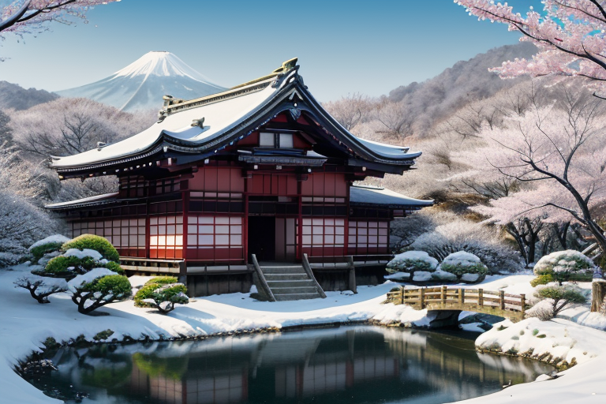
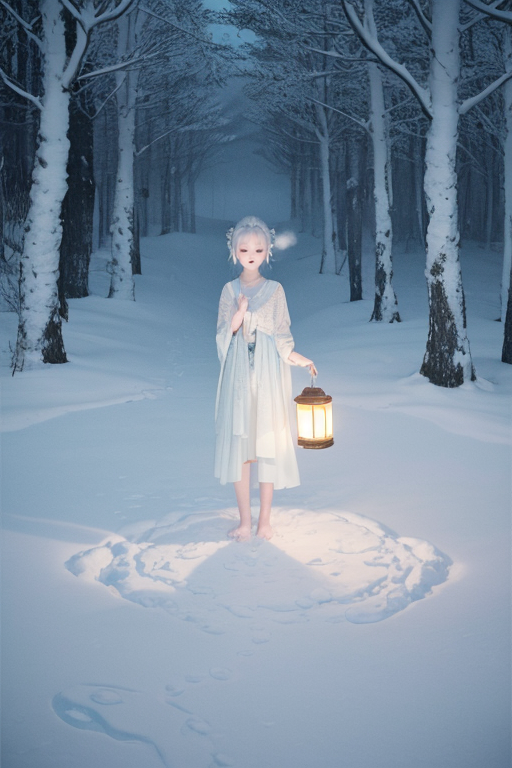
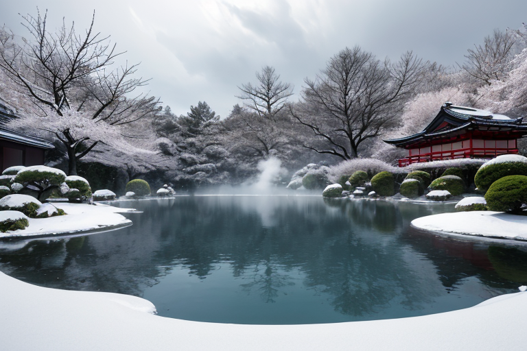
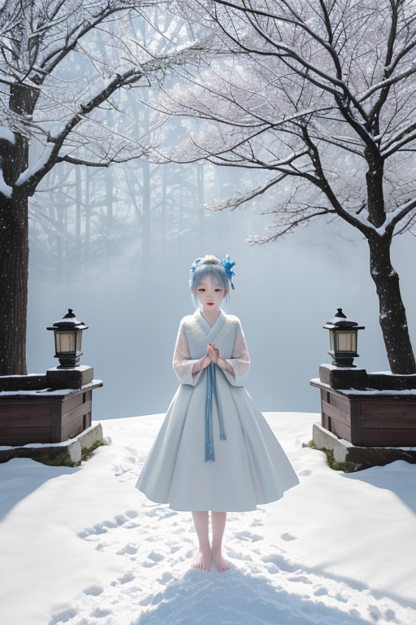
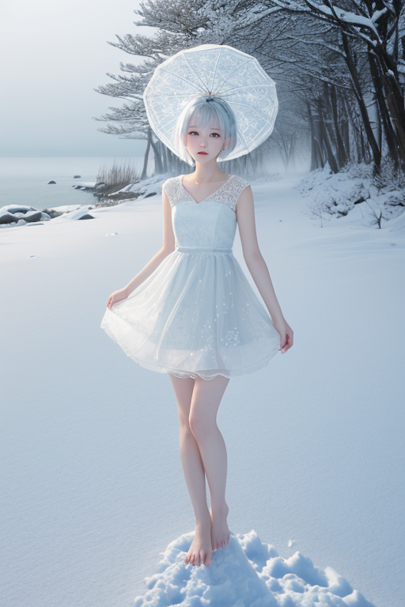

第一章「現実の秋田」
あなたはまだ気づいていない。この土地にも、王がいることを。
角館武家屋敷の枝垂れ桜は、花の季節を過ぎ、深い緑の静寂に包まれていた。黒板塀に沿って歩く者の足音さえ、この空気に吸い込まれてしまうようだ。ここには、かつて佐竹藩の武士たちが生きた厳しさと、その裏側にあったであろう個人の思いが、沈黙の層として積もっている。田沢湖の深碧の水は、一切の音を拒む鏡のように、空と山々を静かに写し続ける。その透明度は、見る者の内面をも映し出す圧倒的な沈黙だ。
この土地の沈黙は、単なる無音ではない。なまはげの仮面の奥に宿る畏怖の祈りであり、かまくらの炎が照らす無言の願いであり、きりたんぽを囲む家族の、言葉にされない温もりの交換である。雪に覆われる長い冬は、人々に内省を強いる。それは逃避なのか。それとも、外の喧騒を一切排し、己と対峙するための、強靱な力の源泉なのか。
雪は、すべての物音を吸い込む。

第二章 歪みの兆候
田沢湖の深い青は、鏡のように周囲の山々を静かに映していた。しかし、アキタリア・ネージュには見えていた。湖底から、微かに立ち上る気泡の乱れ。それは、この土地に蓄積された「祈り」のエネルギーが、目に見えぬ歪みによって、かすかに乱れ始めている兆候だった。
なまはげの夜。家々を巡る鬼たちの咆哮と、子供たちの泣き声は、古来より災いを祓うための、激しい祈りの形である。その儀式の最中、アキタリアは感じた。畏怖の感情が、本来の浄化の軌道を外れ、むやみに拡散しようとする一瞬の「ずれ」を。横手のかまくらに灯る無数の炎も、静かな願いを載せて揺らめいていたが、その幾つかが、なぜか不自然に早く消えていく。
雪王は、乳頭温泉の湯煙の立ち上る様を、ただ見つめていた。地熱という地球の鼓動が、ここでは極めて穏やかに表出している。しかし、その鼓動のリズムに、ほんのわずかな、しかし確かな不協和音が混じり始めている。人々の祈りや、土地の記憶、自然の営みが織りなす「静律」に、乱れの種が蒔かれた。それは、大きな災害というより、心象の風景を蝕む、静かな亀裂だった。
アキタリアは、一片の雪結晶を掌に乗せた。結晶の尖端が、微かに震えている。

第三章 王の葛藤
乳頭温泉の源泉から立ち上る湯煙は、いつもより濃く、重かった。地熱の不協和音は、土地の記憶を揺さぶる。佐竹藩の歴史が刻まれた角館武家屋敷の静寂も、その枝垂れ桜の下に積もる雪も、かすかな軋みを発していた。
アキタリア・ネージュは、田沢湖の深碧をただ見つめていた。湖面は鏡のように静かだが、その底では、見えない圧力がゆっくりと蓄積されている。彼の内側でも、同様のことが起きていた。沈黙を保つことは、この国の感情密度に晒される王としての義務だった。騒がしい感情を、雪のように降り積もらせ、静かに圧縮する。それが調整の一形態であると、ずっと信じてきた。
しかし、掌の雪結晶の震えは問う。この沈黙は、感情という歪みから目を背ける「逃避」なのか。それとも、すべてを受け止め、浄化する「力」なのか。妖精ナマハルが司る「恐れ」の感情が、土地から、人々から、かすかに滲み出て、彼の無感情だった核心を揺るがす。
彼は目を閉じた。大曲の花火の轟音も、竿燈祭りの喧騒も、すべてを雪原の静寂に沈めるのが彼の役目だ。だが、今、その静寂そのものが重く、苦しい。

第四章 妖精との対話
角館武家屋敷の枝垂れ桜が、静かに雪を纏う夜。アキタリアは、自らの領域の中心で、主席妖精ネージュリィと向き合っていた。
「王よ。あなたの沈黙は、決して無ではありません」
ネージュリィの声は、降り積もる雪のように柔らかく、確かだった。
「この地には、なまはげの仮面のように、表に出せぬ恐れや悲しみが多くあります。横手のかまくらが静かに灯すように、それらを消すのでなく、内側で抱き、温める。それが、あなたの『静寂』の力です」
アキタリアは掌を見つめた。微調整の力は、災害そのものを消せない。同様に、人々の感情という「内なる歪み」も消せない。ただ、その衝撃を和らげ、受け止める時間を、静寂の中に創り出すことしかできない。
「祈りとは、言葉以前のものです。この雪原の沈黙そのものが、祈りなのです」
ネージュリィが続けた。
「あなたが感じる重さは、逃避ではなく、この地の全ての声を、あなた一人が受け止めている証。それこそが、『力』の始まりです」
王は、初めて、自らの内に湧くもどかしさの正体に気付いた。それは無感情の欠如ではなく、あまりにも多くの感情を、静寂という器に注ごうとする、器の軋みだった。

第五章 微調整と余韻
男鹿半島の荒々しい日本海に、冬の第一波が押し寄せた。その時、王は角館の屋敷にいた。彼は目を閉じ、雪原の広がる静寂を、自らの内側へと収束させた。受け止めた無数の声——なまはげに怯える子供の鼓動、かまくらの灯りを守る大人の息遣い、きりたんぽの鍋の湯気に込められた労い——それら全てを、深い沈黙で濾過する。
濾過された感情は、純白の精神波となり、歪みの列島を流れる地の軋みへと向かう。それは津波を押しとどめる盾ではない。沿岸の漁師が、ふと波の音に耳を澄ませ、一歩高い場所へと駆け上がるための、数秒の「間」を紡ぐ。雪崩の前に、森の動物たちがかすかに騒ぎ立てる「偶然」を調整する。
大曲の花火大会の華やかな記憶も、田沢湖の深い碧の憂いも、全ては静寂の中で混ざり合い、中和され、この地を包む緩衝材となる。王はもはや、感情の有無を問わない。彼自身が、秋田という器そのものになったのだ。
沈黙は、逃避ではない。あまりにも豊かな声を、誰にも傷つけずに抱き止める、静かなる力の形。
あなたの町にも、王がいる。